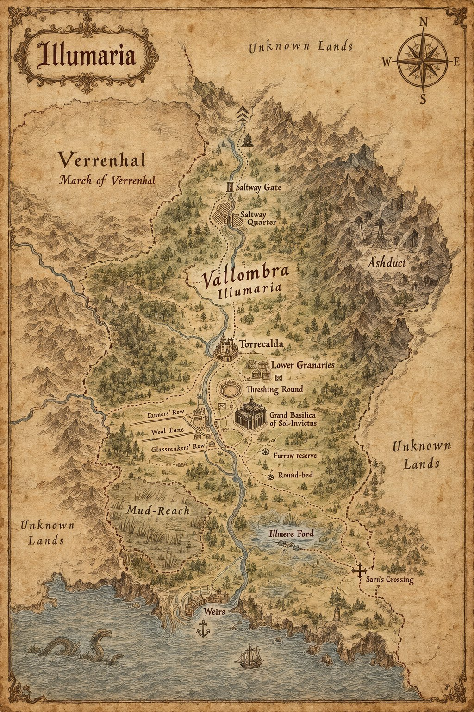

Gazetteer of Illumaria

About the Map
A map of a single kingdom at two moments. Case 2365 knows it as Vallombra, in the years of ash when its kings and its Reckoner found a religion; Case 4555 knows it as Illumaria, long after, when the religion has a Basilica, a High Pontiff and a succession to settle. The map prints both names together, as Vallombra / Illumaria, and sets the March of Verrenhal beside it to the north-west.
It is filed here as a gazetteer, not as a subject or a record. The places below are the ones printed on the map, from north to south; each note is drawn from the case files, and a place that no case file yet describes is said to be unfiled rather than guessed at.
Places
- Unknown Lands
- Printed along the map's northern, western and eastern margins. No case file describes them.
- March of Verrenhal
- The northern realm of King Ragnvald and his sister Sigrid in Case 2365, who rules it as regent for eleven years after him. Its host comes down a mountain pass into Vallombra in the ash. The map files it as a March.
- Saltway Gate
- The northern gate on the Saltway, where Rufio's wardens turn back the people whose names cannot be found, where Arne's four thousand are met at the low hour, and where Sigrid finds a row of a hundred and forty-one dead with their feet toward the gold. The parley is held here.
- Saltway Quarter
- A parish of the Roll of the Lit. It is the column of three hundred and eleven names that the copyist Lino skips when his wick gutters, and the quarter to which Livia sends forty wagons of grain, unlabelled, on the anniversary of the First Furrow for fifty-one years.
- Ashduct
- The hills in the east. When they breathe and the sun withdraws, Severin extends the year's grace in Case 2365 from three days to a season.
- Vallombra / Illumaria
- The kingdom itself. In Case 2365 it is Vallombra, the realm of King Faustin and then his daughter Livia, Princess of Vallombra and later Queen of Illumaria. In Case 4555 it is Illumaria, the High Realm of King Aethelgard and, in time, of High Sovereign Blakk.
- Torrecalda
- The walled city on the river, drawn with a keep. In Case 2365 it is where the Granary's physician tells Faustin that no room is large enough to keep the sick from the well, and the city whose tanning trade the Tanner's Widow belongs to.
- Lower Granaries
- The grain-houses below Torrecalda. Nina, Piero's sister, is the daughter of the Lower Granary clerk and dies in the granary house in the first winter of the ash.
- Threshing Round
- The Round, where the First Furrow is turned. The Reckoner's tower stands beside it; Livia is crowned there at nine; and it is the ground on which the sun stands at the sixth hour when Severin states his one false figure.
- Grand Basilica of Sol-Invictus
- The seat of the religion the first case founds. In Case 2365 a lens the diameter of a cartwheel is ground to catch the single shaft of sun through its oculus; in Case 4555 the Great Judgment is held here under High Pontiff Sarel, and Observer 902 watches from an alcove in its black stone.
- Tanners' Row
- Marked on the map; no case file describes it yet.
- Wool Lane
- A column on the Roll of the Lit: the next one Lino copies after the Saltway Quarter.
- Glassmakers' Row
- The street of Anselmo, master of the guild that grinds the Sol-Focus Arc by hand for eleven years.
- Furrow reserve
- Marked on the map; no case file describes it yet.
- Round-bed
- Marked on the map; no case file describes it yet.
- Mud-Reach
- Blakk's duchy in Case 4555: nine hundred square miles of drained marsh, standing timber and tenant debt.
- Illmere Ford
- The Standing at Illmere Ford, the engagement that follows Blakk's unread letters of surrender. Astraea's cavalry meets Ignis's raiding column here, and Cassian arrives on the fifth day to find no one left worth conquering.
- Sarn's Crossing
- Where Astraea throws herself between Blakk and Canon Voss's blade, taking a wound that troubles her for the rest of her life.
- Weirs
- The harbour at the river's mouth. Lord Fulvio of the Weirs, one of the sixteen lords of Vallombra, offers his grain-ships in Case 2365 as the Order's sole licensed factor for whatever is built on the strength of the noon.
Appears In
Vallombra, at the founding of its religion, is the kingdom of The Decree of Luminescence (Case 2365). The same kingdom, long after and under the name Illumaria, is the kingdom of The Vessel of Unmediated Grace (Case 4555). Their shared faith is the Decree of Luminescence.